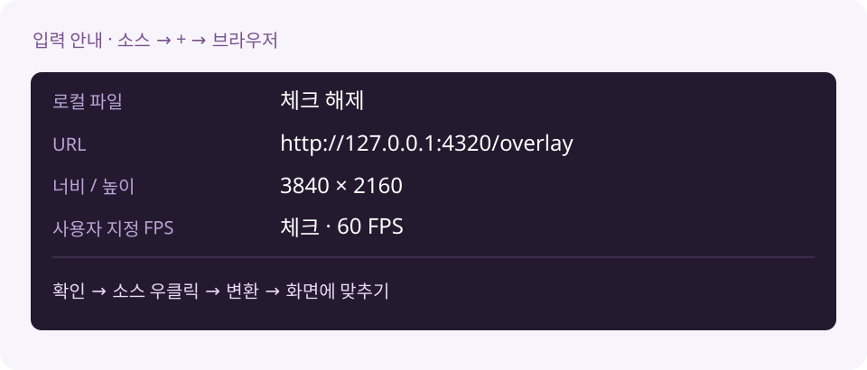

설치 버튼 없이,
OBS에 직접 붙여요
압축을 푼 폴더를 그대로 두고 아래 세 가지를 등록하면 끝이에요.
1. 함께 실행할 스크립트
OBS → 도구 → 스크립트 → +에서 이 폴더의 kira-unified.lua를 골라요. 이 장면 모음을 열면 자동으로 실행돼요.
2. 조작 독
독 → 사용자 지정 브라우저 독에서 이름을 키라 통합 셋리스트로 하고 주소를 붙여 넣어요.
http://127.0.0.1:4320/control?dock=1
3. 방송 소스
소스 → + → 브라우저에서 URL을 아래 주소로, 너비/높이는 3840 / 2160, 사용자 지정 FPS는 60으로 넣어요.
http://127.0.0.1:4320/overlay
확인 후 소스 우클릭 → 변환 → 화면에 맞추기를 눌러요.
이제 곡을 담아요
독의 노래책에서 +로 곡을 담고 부르기를 눌러요. 위쪽 원본 / 앰프 DLC 버튼으로 디자인을 골라요.

OBS 방송 FPS·인코더·오디오 설정은 그대로예요. 폴더를 옮기거나 자동 설치판과 동시에 실행하지 말아요.
자세한 수동 안내와 문제 해결